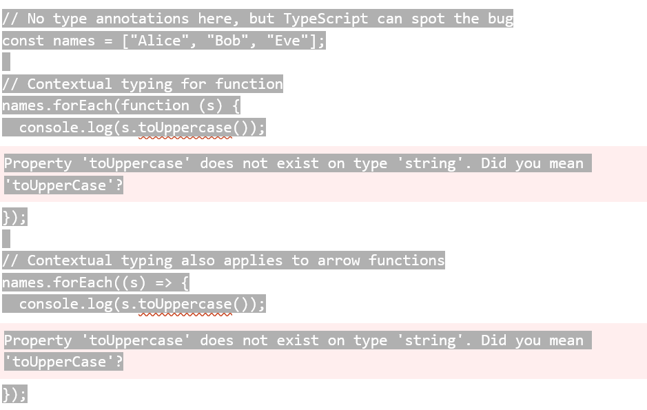

Home
Home
TypeScript
Contextual Typing
Contextual Typing
TypeScript can often infer types that are missing
It can figure out that
msg
is a string from
let msg = "hello there"
You can skip type annotations when TypeScript can correctly infer them
Types can be explicity assigned like these examples
Function with typed parameters and return type
" function greet(person: string, date: Date): string { ...
Contextual typing occurs when the context that the function occured within informs what types should be used
This pops up in places like annonymous functions and arrow functions

Function return types can be configured to return more than one type
This is useful if you want to either return a data object or an custom error object (in the event of an error)